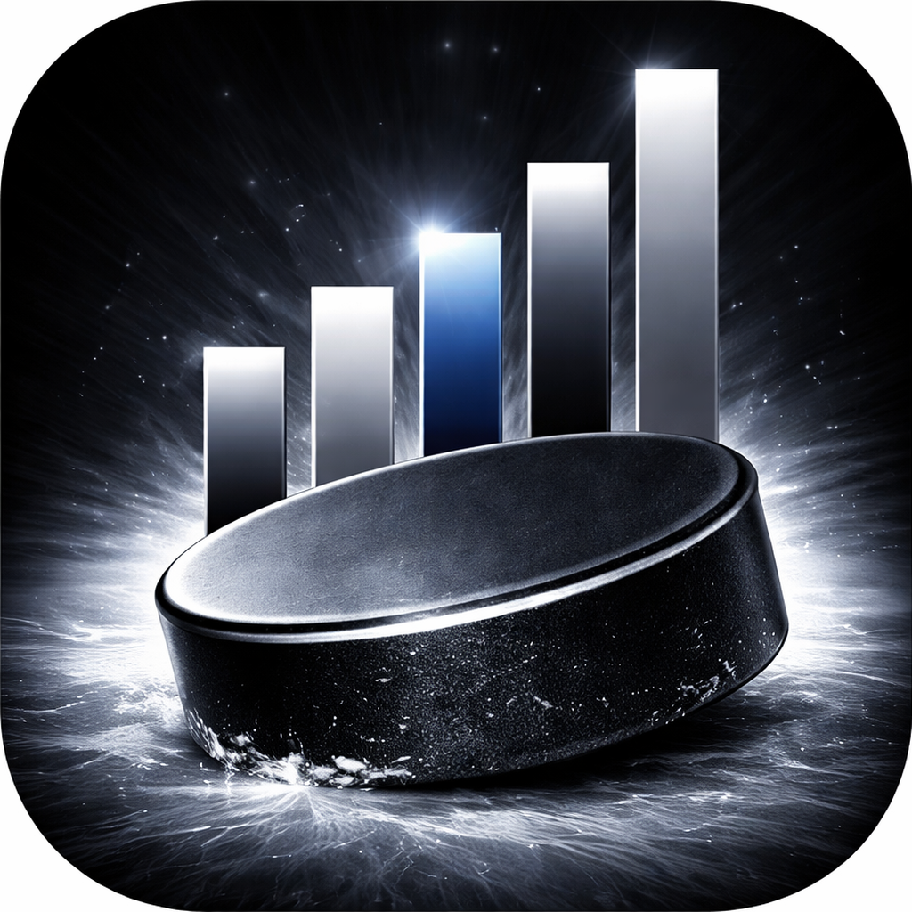
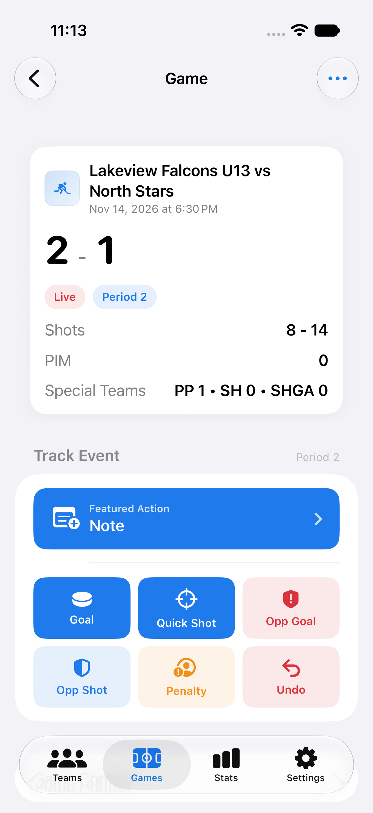
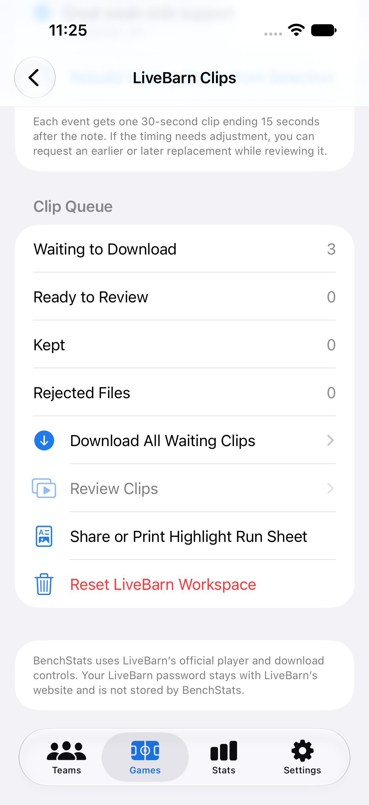
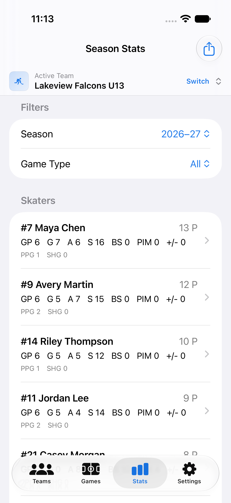

Fast tracking
Put your most-used action in one large, easy-to-reach button.

BenchStatsFast live stats, video-ready notes, and season performance in one focused iPhone app.

Tap a note when something matters. After the game or practice, BenchStats turns those timestamps into a queue of 30-second clips using your own LiveBarn access.
LiveBarn is a separate third-party service. BenchStats is independent and is not affiliated with or endorsed by LiveBarn. A user’s own LiveBarn access may be required.


Keep rosters, schedules, results, skater stats, and goalie performance organized by season.
Put your most-used action in one large, easy-to-reach button.
Choose which team and opponent events appear during a game.
Record practice notes for video without changing team statistics.
Use private iCloud sync across devices signed into the same Apple ID.
BenchStats contains no advertising, cross-app tracking, or third-party analytics. Exportable backups keep your season portable.